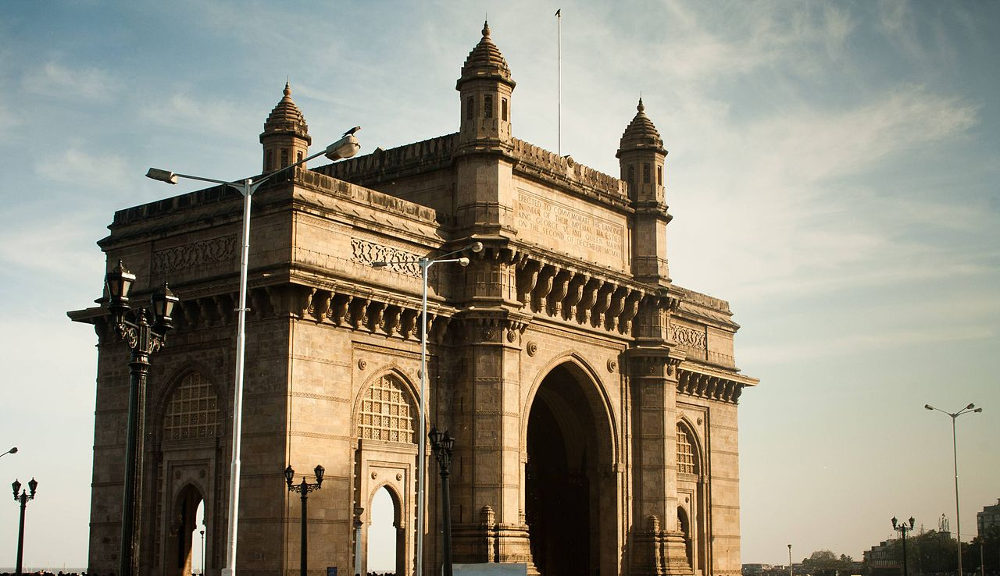
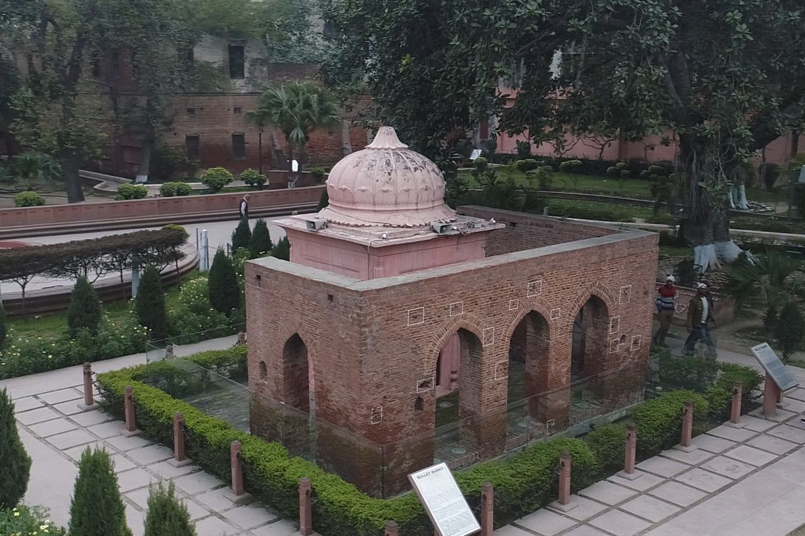
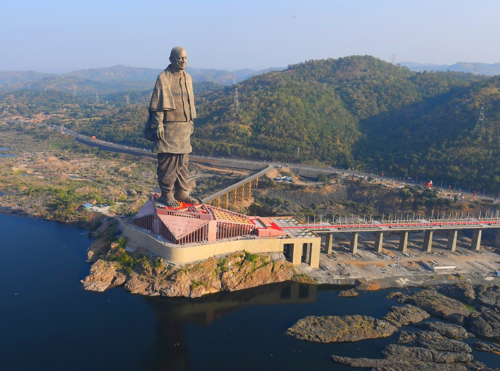
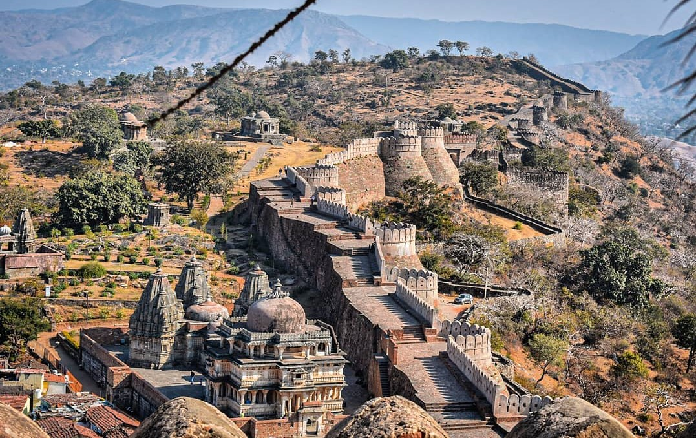

1. Gateway of India, Mumbai
The Gateway of India is, without doubt, one of the most popular tourist attractions in India. It is located at Apollo Bunder Waterfront
and overlooks the Arabian Sea in the most beautiful way. One of the most distinguished monuments in Mumbai, it was built in the year 1924
by famous architect George Wittet as a commemoration of the visit of King George V and Queen Mary to Mumbai. The imposing structure of
the monument is a beautiful confluence of Indian, Arabic and Western architecture and has become a popular tourist hub in the city.

2. Jallianwala Bagh, Amritsar
Located near the famous Golden Temple of Amritsar, the Jallianwala Bagh is a public garden which houses a memorial to commemorate
the massacre of peaceful celebrators by the British forces. The tragic incident had left a deep scar on the country, and a memorial
was constructed post the independence for the innocents who lost their lives in this devastating incident. Established by the
government of India in 1951, the massacre memorial was inaugurated by Dr Rajendra Prasad on 13th April 1961. The place has been
turned into a beautiful park and is managed by the Jallianwala Bagh National memorial trust.

3. Statue of Unity, Gujarat
Statue of Unity is a memorial to The Iron Man of India, Sardar Vallabhbhai Patel. The statue has been erected to propagate
Sardar Vallabhbhai Patel's vision of India and to inspire the Citizens of India through his patriotism and freedom struggle.
The Bronze statue of the founding father of the Republic of India stands 182 metres tall grabbing the attention of the whole
world as the 'Tallest statue in the World'. The statue of Unity is Located in Gujrat, by the banks of River Narmada on the
River Island of Sadhu Bet overlooking the Narmada Dam (Sardar Sarovar Dam) from 3.2 km away.

4. Kumbhalgarh Fort, Rajasthan
Kumbhalgarh Fort is one of the five hill forts of Rajasthan that were declared the UNESCO world heritage site in 2013. It is
situated in Rajsamand district of Rajasthan and lies 82 kilometres northwest of the city of Udaipur. Constructed on the foothills
of Aravalli ranges, it is surrounded by thirteen hill peaks of the ranges and is perched at an elevation of 1,914 m. The magnificent
fort is situated in the middle of a forest which has been turned into a wildlife sanctuary. It is the second largest and the most
important Mewar fort of Rajasthan after Chittorgarh palace.